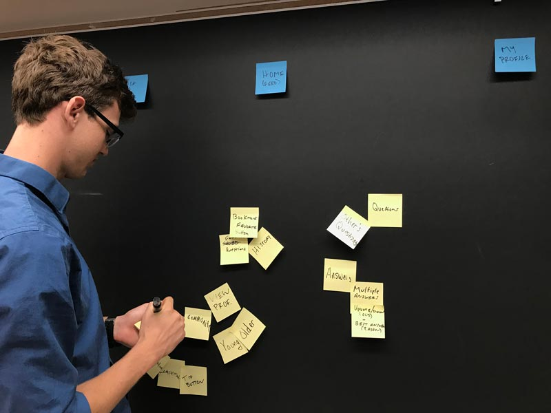
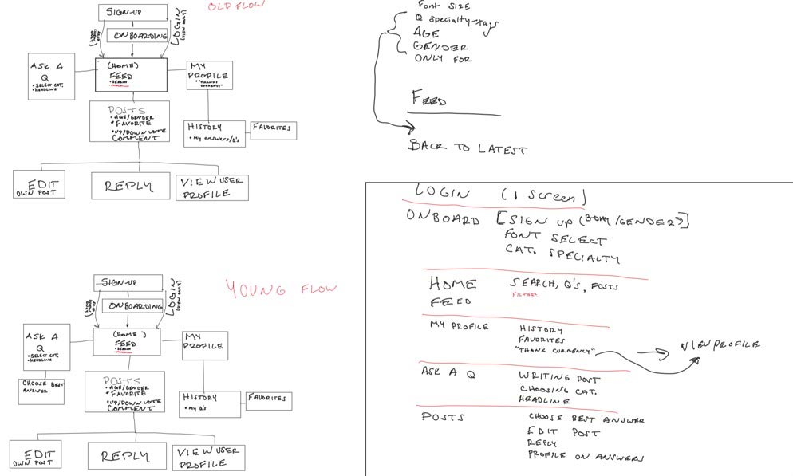
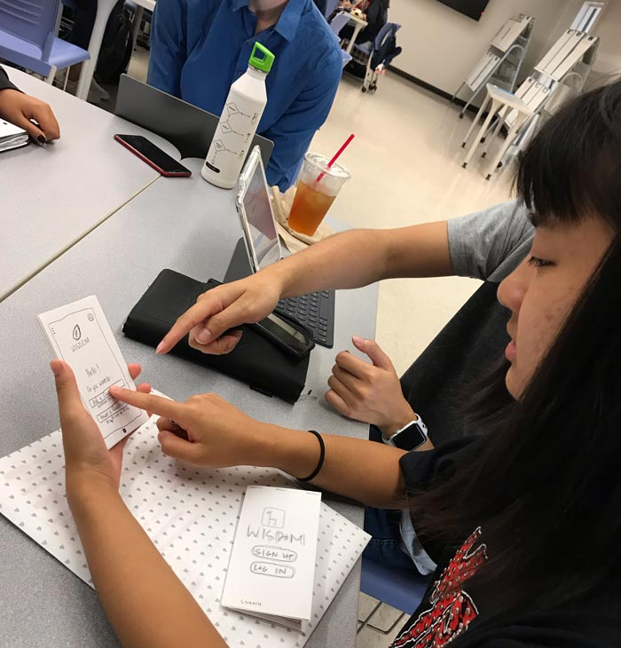
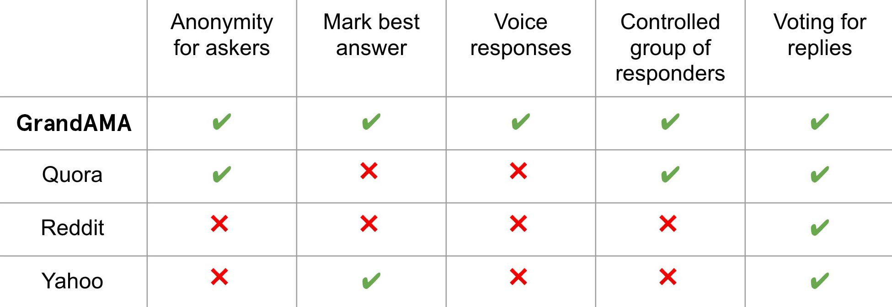

Description
Grandma + (A)sk (M)e (A)nything = GrandAMA
This project was created from a 5 week course focused on designing and prototyping an accessible mobile application to accomodate the lifestyles of people ages 50+. Our solution bridges the gap between generations: the elderly can share advice with those who need it and the youth can ask for guidance. Through this app, users are able to post a question and receive a thoughtful voice response from someone who may have experienced it before.
Responsibility
Given the broad prompt of creating a digital tool for a population of elders, my initial contribution was helping narrow our thoughts to a more focused concept:
Need Finding
I felt that older generations needed a way to keep up-to-date with younger generations in terms of culture, trends, etc. For example, grandparents have a difficult time trying to understand how their grandchildren are feeling and what they might be going through. They might even have trouble communicating and being on the same page, so to speak. So our team took this problem and we brainstormed.
Specifically, we took the needs of those seeking advice and the time and wisdom of those are willing to share it and created an app concept. Our concept does not focus on a method to address the needs of those ages 50 and up, but of everyone of all ages. The foundation of our idea stems from the former group being available for others as well as a rewarding sense of connection found from helping them out.
To summarize, the key challenges that we faced were:
- Help the elderly stay connected socially
- Make communication personal and genuine in a digital world
- Find a safe platform for anyone to ask real, personal questions
Information Architecture
With our advice-giving idea in mind, we set out to outline the information architecture, first with post-it notes then digitally with more detail. We determined that we would build for mobile rather than for desktop because of the prevalence of mobile devices and ease of touch-opening an app as opposed to typing a web URL into a browser.
Originally at the bottom navigation bar, we had a profile tab, a home tab that leads to the feed of questions, and an ask tab (all in the color blue in the image to the right). We also cared to include functions such as b ookmarks and history since these convenient functions are usually built into apps that have extensive amounts of information. Also planned was a voting system for best answers and a monetary tip button for extra appreciation.
Prototyping
After reviewing what was outlined, we decided we wanted to keep only what was essential in order to meet usability standards as well as create a streamlined user experience, especially for 50+ aged folks.
As a result, there were two types of screens to build for: answerers (ages 50+) and askers (all ages). The answerers only need to decide between skipping a question or answering it, whereas the askers can browse questions or post their own.
We first conducted user testing on paper prototypes, a collection of each group members’ low-fidelity mock-ups. We focused our critiques on the layout of the interface and the logical flow of user interactions.
Elements that we had in common included:
- Simple, large navigation icons
- Voting system to determine the best answers
- Profile for answerers and their most popular advice
- Search and answer system separated by categories
Final Prototype
Competitive Analysis
There already exists a few options for places that provide advice. Our most notable competitors include Quora, Reddit, and Yahoo Answers. Taking a closer look at the competition, we singled each one out and then summarized GrandAMA's advantages over them:
One complaint for Quora is that there is no restriction on who can ask and answer questions. By enforcing an age restriction on who can answer questions, we hope to control the pool of responses. Other Quora users, on the other hand, complain about the censorship on Quora through the "be nice be respectful" policy, which restricts any content that can be deemed as "not nice or respectful". Though it has good intentions, users feel that they can’t freely express themselves without offending anyone. We want to encourage honest, yet respectful discussions, especially as it relates to personal matters.
Though usernames are semi-anonymous, post/comment history is available to anyone. On grandama, we want to keep the confidentiality of users who post questions seeking advice. Reddit also allows users to pay, or "give gold", to another user to unlock features. Ideally, we would want GrandAMA to be completely free to use and ad-free.
Yahoo has a feature of linking all activity back to its user, which the user can delete during a temporary window of time. A user can be anonymous to the public through a nickname but any activity is still tied to that nickname and profile. Yahoo’s forum itself has tons of questions from users asking how to remain anonymous. The answers can be both simple and complex. This points out that remaining anonymous is in demand.
GrandAMA allows users to ask questions to a qualified group of elders without having their profie revealed. GrandAMA borrows a feature from other competitors: a voting system where the best answers can be viewed at a glance. However, what sets us apart is the web app’s consideration towards the answerers. To accomodate an older population, answerers respond through voice messages instead of the traditional way of typing an answer.
Conclusion and takeaways
Our mobile application helps the two demographic groups, elders and youth, with their respective needs. By bringing together the wisdom of elders with the eagerness to learn of the youth, GrandAMA creates a mutual relationship between altruistic users intent on giving back to one another.